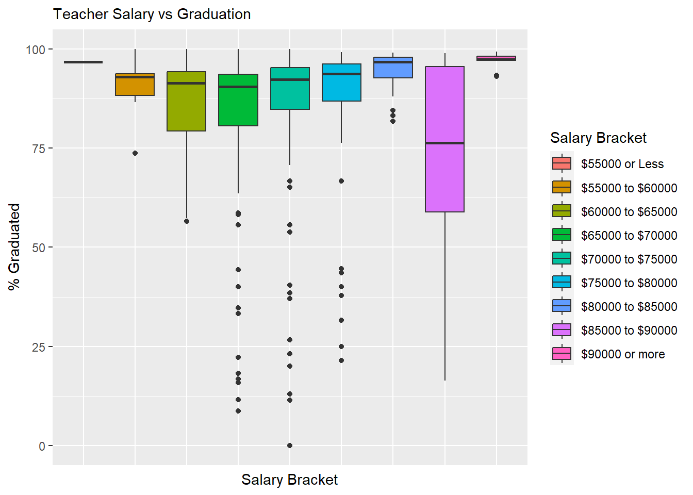
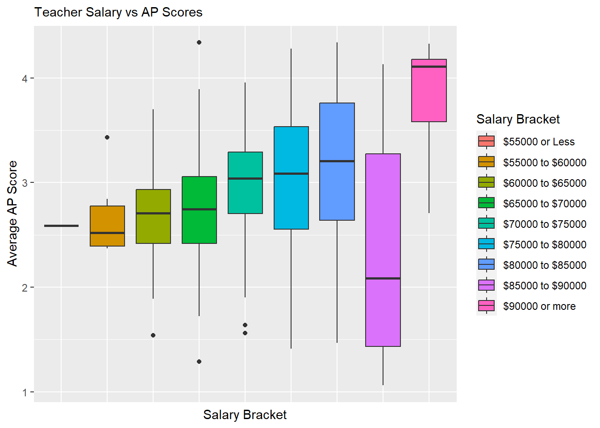
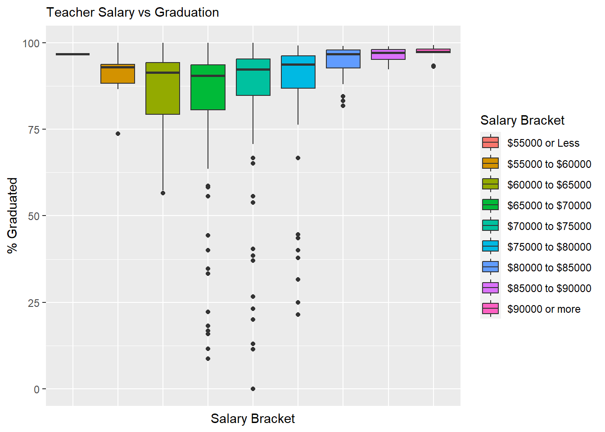
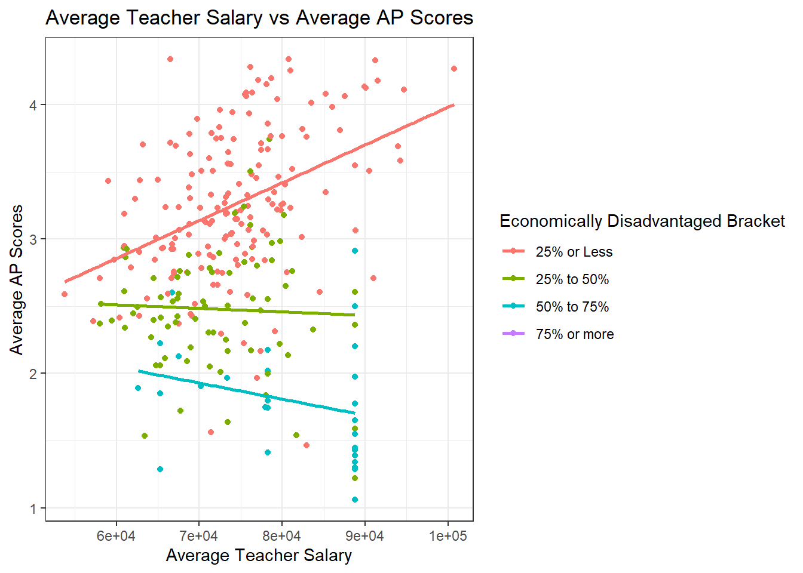
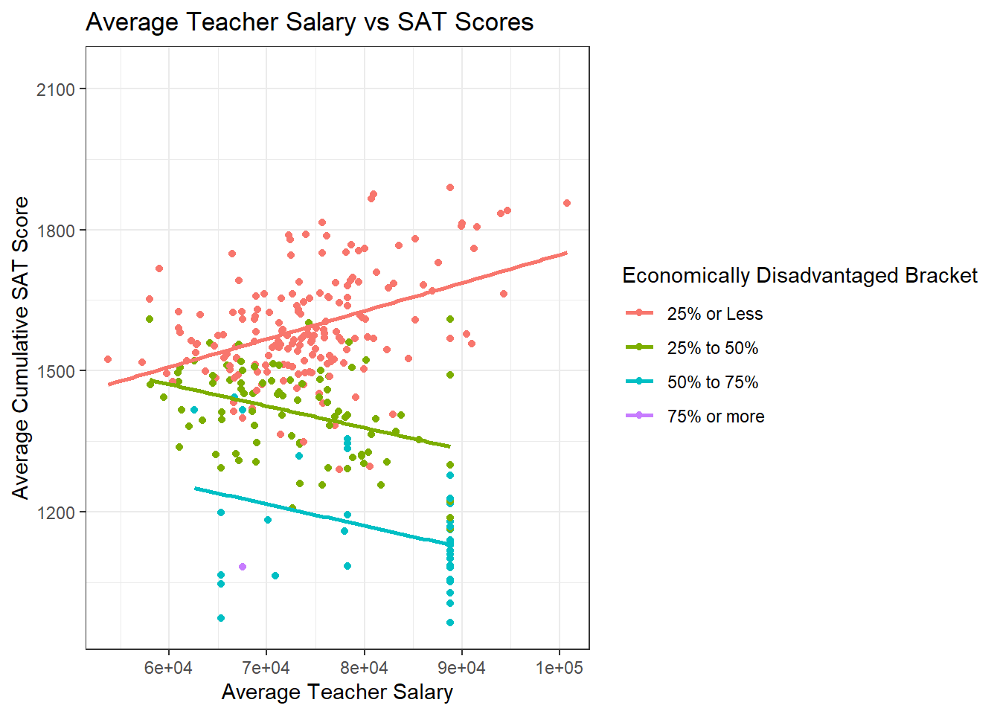
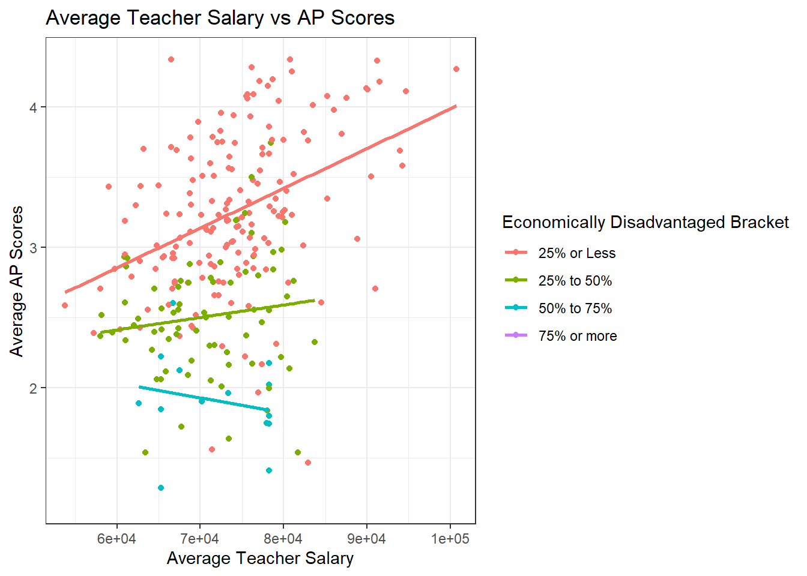

Code
library(tidyverse)
knitr::opts_chunk$set(echo = TRUE,warning=FALSE, message=FALSE)
library(ggplot2)library(tidyverse)
knitr::opts_chunk$set(echo = TRUE,warning=FALSE, message=FALSE)
library(ggplot2)I will be analyzing a dataset for Massachusetts public schools and districts. The dataset was collected from the 2017 academic year and is a combination of several smaller datasets reported by all 288 public school districts in Massachusetts to the Massachusetts Department of Education. Each of the 376 rows of the dataset represents a high school and each school contains socioeconomic data(e.g. % economically disadvantaged, % African American, % White, etc) along with outcomes of students from those schools(% graduated, % pursuing college/university). Test scores(e.g. SAT, AP, MCAS) are also collected and can be used as a secondary metric of student success. Finally, the data includes school finances(e.g. teacher salary, district expenditures) which will be the primary focus of our analysis as predictor variables for student success. Schools in the dataset range from elementary to high school, but I will be working with just the subset of high schools.
I will be making the scope of my analysis more narrow and focus solely on high schools, and as such, many of the MCAS related columns can be omitted to make the dataset easier to work with. The focus of my analysis will be how spending can affect test scores and graduation rates.
Different school districts vary widely when it comes to how their schools are funded and how their teachers are compensated. Much of the data on how school districts spend their money is public, we can be useful for an analysis of the factors which can lead to better outcomes among students in public schools.
The central question investigated in this paper is: does increasing teacher salary in public schools impact the success of students? Student success will be defined primarily by higher graduation rates but we will also look into higher test scores as a metric of success. During the process of exploring this question, we will also be exploring how the economic background of students and class size impacts school success, especially in conjunction with average teacher salary.
The dataset is in fairly nice shape to begin with, but we are only interested in a small portion of the original 300 columns of data and since we are only interested in high schools, we can safely omit Elementary and Middle schools which do not report a Graduation rate.
data<- read_csv("_data/MA_Public_Schools_2017.csv",show_col_types = FALSE)
keeps <- c(1,2,10,13,14,15,26,27,28,29,30,31,32,34,36,38,40,41,42,43,44,45,46,47,48,49,50,51,52,53,55,62,64,68,70,71,72,80,81,82,83,84,85,86,87,88,89,90,91,92,93,94,95,96,97)
hs <- data[keeps]%>%
subset(! is.na(data$`% Graduated`))
dim(hs)[1] 376 55length(unique(hs$`District Code`))[1] 288After slimming down the dataset to only contain necessary data there are 376 rows, representing 376 Massachusetts high schools, and 53 columns of useful data for each. There are also 288 unique district codes, as larger districts have more than one high school. Districts are important to our central question because most districts have standardized pay scales and multiple schools in the same district will be reported to have the same average salary.
The variables that I am interested in specifically from this dataset are Average Teacher Salary, Graduation Rates, SAT Scores, Average AP Test Scores, Average Class Sizes, and percentage of students who are economically disadvantaged. The last of these may be the most important to our analysis, as economically disadvantaged students will have a harder time in school regardless of teacher salary, so we need to compare across schools with a similar proportion of economically disadvantaged students.
Average teacher salary is reported by district, which is unfortunate of our analysis as some districts have many schools which can vary in performance. However, the only real outlier in regards to this issue is Boston Public Schools. For this reason, our analysis will be done on Massachusetts as a whole, and Massachusetts excluding Boston Public schools. Teacher salary will be the focus of the analysis, as if a correlation with salary can be shown to affect student success then real steps could be taken by policy makers to improve student success by increasing teacher salary. Similarly, if a correlation with class size and student success can be shown, steps could be taken to hire more teachers, thus reducing the average class size.
The percent of economically disadvantaged students in each school will not be explored much explicitly when it comes to predicting student success, but it is very important to the analysis of teacher salary, as it plays a role in explaining some of the variance in the most trivial model of student success with teacher salary.
Since our focus is primarily high school students, the metrics for success will be primarily Graduation rates, AP Scores, and SAT Scores. Graduation rates are recorded across the board, but not every student takes the SATs or AP tests, which can skew the average scores. More specifically, economically disadvantaged students and students who are already performing poorly in school are less likely to pay for these courses, so while we will explore how teacher salary affects these metrics, the focus will be on graduation rates.
print("Average Salary Breakdown")[1] "Average Salary Breakdown"summary(hs$`Average Salary`,na.rm=TRUE) Min. 1st Qu. Median Mean 3rd Qu. Max. NA's
53763 67556 73404 74267 78802 100731 36 print("Graduation Rates Breakdown")[1] "Graduation Rates Breakdown"summary(hs$`% Graduated`,na.rm=TRUE) Min. 1st Qu. Median Mean 3rd Qu. Max.
0.00 82.15 92.25 83.33 96.20 100.00 print("Percentage Economically Disadvantaged Breakdown")[1] "Percentage Economically Disadvantaged Breakdown"summary(hs$`% Economically Disadvantaged`,na.rm=TRUE) Min. 1st Qu. Median Mean 3rd Qu. Max.
3.10 13.18 25.55 30.82 44.33 93.90 After taking a very short look into some summary statistics for some of the variables we will be diving into, it appears that the average teacher salary across the state is $74000, without too much variance. Graduation rates average 83% statewide but this number appears to be skewed as the median is a fair bit higher at 92%. The percentage of economically disadvantages students in a given school also appears to be skewed a bit by outliers, as the average statewide is 30% but the median is 25.5%, indicating that there are some schools with a very high percentage of economically disadvantaged students.
Working with the data can be made a lot easier by partitioning some of the variables we’re interested in into sections. For teacher salary, average expenditure, class size, and percentage of economically disadvantaged students, I will be creating a categorical variable placing schools into various brackets of each variable. This will make correlations a bit more clear as there is not necessarily a clear trend across all schools when it comes to student performance when plotted against any of these variables individually.
hs <- mutate(hs,`Salary Bracket` = case_when(
`Average Salary` < 55000 ~ "$55000 or Less",
`Average Salary` < 60000 ~ "$55000 to $60000",
`Average Salary` < 65000 ~ "$60000 to $65000",
`Average Salary` < 70000 ~ "$65000 to $70000",
`Average Salary` < 75000 ~ "$70000 to $75000",
`Average Salary` < 80000 ~ "$75000 to $80000",
`Average Salary` < 85000 ~ "$80000 to $85000",
`Average Salary` <= 90000 ~ "$85000 to $90000",
`Average Salary` > 90000 ~ "$90000 or more"
))
hs <- mutate(hs,`Per Pupil Expenditure Bracket` = case_when(
`Average Expenditures per Pupil` < 12500 ~ "$12500 or Less",
`Average Expenditures per Pupil` < 15000 ~ "$12500 to $15000",
`Average Expenditures per Pupil` < 17500 ~ "$15000 to $17500",
`Average Expenditures per Pupil` < 20000 ~ "$17500 to $20000",
`Average Expenditures per Pupil` < 22500 ~ "$20000 to $22500",
`Average Expenditures per Pupil` <= 25000 ~ "$22500 to $25000",
`Average Expenditures per Pupil` > 25000 ~ "$25000 or more"
))
hs <- mutate(hs,`Economically Disadvantaged Bracket` = case_when(
`% Economically Disadvantaged` < 25.0 ~ "25% or Less",
`% Economically Disadvantaged` < 50.0 ~ "25% to 50%",
`% Economically Disadvantaged` < 75.0 ~ "50% to 75%",
`% Economically Disadvantaged` < 100.0 ~ "75% or more"
))
hs <- mutate(hs, `Class Size Bracket` = case_when(
`Average Class Size` < 5 ~ "5 or fewer Students",
`Average Class Size` < 10 ~ "5 to 10 Students",
`Average Class Size` < 15 ~ "10 to 15 Students",
`Average Class Size` < 20 ~ "15 to 20 Students",
`Average Class Size` < 25 ~ "20 to 25 Students",
`Average Class Size` < 30 ~ "25 to 30 Students",
`Average Class Size` <= 35 ~ "30 to 35 Students",
`Average Class Size` > 35 ~ "35 or more Students"
))
hs <- mutate(hs, `Average AP Score` = (`AP_Score=1` + 2*`AP_Score=2` + 3*`AP_Score=3` + 4*`AP_Score=4` + 5*`AP_Score=5`)/`AP_Tests Taken`)
hs <- mutate(hs, `Average Cumulative SAT Score` = `Average SAT_Math` + `Average SAT_Reading`+`Average SAT_Writing`)These categories will be used to look at correlations of teacher salary and student success, while keeping some other key variables constant such as the percentage of economically disadvantaged or average class size. It’s also useful to break salary into brackets so see how student success is grouped across districts with different salaries.
Below are histograms visualizing graduation rates and AP test scores across different salary brackets:
ggplot(data=subset(hs,!is.na(`Salary Bracket`)), aes(x=`Salary Bracket`, y=`% Graduated`, fill=`Salary Bracket`)) +
geom_boxplot() +
theme(
legend.position="right",
plot.title = element_text(size=11),
axis.text.x=element_blank(),
axis.ticks.x=element_blank()
) +
ggtitle("Teacher Salary vs Graduation")
ggplot(data=subset(hs,!is.na(`Salary Bracket`)), aes(x=`Salary Bracket`, y=`Average AP Score`, fill=`Salary Bracket`)) +
geom_boxplot() +
theme(
legend.position="right",
plot.title = element_text(size=11),
axis.text.x=element_blank(),
axis.ticks.x=element_blank()
) +
ggtitle("Teacher Salary vs AP Scores")
At first glance, there does appear to be a slight trend upward in graduation rate as the average salary increases, but there is a much clearer trend in AP scores improving as average salary increases.
Both graphics have an outlier however in the 85000 to 90000 dollar range. This is because the Boston Public School District falls in this range and it includes many different schools which have various levels of socioeconomic diversity. We will be attempting to account for the variance across schools in Boston Public Schools by including more variables in our analysis and model, but it will also be useful to create a copy of our high school dataset which does not include Boston Public Schools.
hs_WO_boston <- subset(hs, !(`District Name` == "Boston"))Below are the same histograms visualizing graduation rates and AP test scores across different salary brackets, but excluding Boston Public Schools:
ggplot(data=subset(hs_WO_boston,!is.na(`Salary Bracket`)), aes(x=`Salary Bracket`, y=`% Graduated`, fill=`Salary Bracket`)) +
geom_boxplot() +
theme(
legend.position="right",
plot.title = element_text(size=11),
axis.text.x=element_blank(),
axis.ticks.x=element_blank()
) +
ggtitle("Teacher Salary vs Graduation")
ggplot(data=subset(hs_WO_boston,!is.na(`Salary Bracket`)), aes(x=`Salary Bracket`, y=`Average AP Score`, fill=`Salary Bracket`)) +
geom_boxplot() +
theme(
legend.position="right",
plot.title = element_text(size=11),
axis.text.x=element_blank(),
axis.ticks.x=element_blank()
) +
ggtitle("Teacher Salary vs AP Scores")
The exclusion of Boston Public Schools doesn’t yet appear to change the trend seen for graduation rate, but the trend for AP test scores become much clearer without Boston Public Schools, which is already suggestive of teacher salary being a predictor variable for student success.
Finally, it would be good to look at how economic disadvantage impact graduation rate, regardless of teacher salary:
ggplot(data=subset(hs,!is.na(`Economically Disadvantaged Bracket`)), aes(x=`Economically Disadvantaged Bracket`, y=`% Graduated`, fill=`Economically Disadvantaged Bracket`)) +
geom_boxplot() +
theme(
legend.position="right",
plot.title = element_text(size=11),
axis.text.x=element_blank(),
axis.ticks.x=element_blank()
) +
ggtitle("Economically Disadvantaged vs Graduation")
The percentage of economically disadvantaged students in a school appears in the graphic above to be very strongly correlated to graduation rates, which is something we will keep an eye on in our analysis.
The box plots from the previous section are useful for demonstrating that we are moving in the right direction with our research question, and that a correlation might be uncovered with a deeper dive into our dataset. The box plots showed some evidence of a trend as salary increases, but there are other factors to consider, and we will create some multivariate visualizations to try and uncover them.
To begin, we’ll look into how salary is correlated with graduation rates while taking into account economic disadvantage and average class size:
ggplot(data=subset(hs,!is.na(`Economically Disadvantaged Bracket`)), aes(x=`Average Salary`, y=`% Graduated`,color=`Economically Disadvantaged Bracket`)) + geom_point()+
theme_bw() +
geom_smooth(method=lm, se=FALSE) +
labs(title ="Average Teacher Salary vs Graduation Rate",
subtitle = "Partitioned by Economic Disadvantage",
y = "Graduation Rate", x = "Average Teacher Salary")
ggplot(data=subset(hs,!is.na(`Class Size Bracket`)), aes(x=`Average Salary`, y=`% Graduated`,color=`Class Size Bracket`)) + geom_point()+
theme_bw() +
geom_smooth(method=lm, se=FALSE) +
labs(title ="Average Teacher Salary vs Graduation Rate",
subtitle = "Partitioned by Class Size",
y = "Graduation Rate", x = "Average Teacher Salary")
When partitioning based on the percentage of economically disadvantaged students, a very clear trend begins to come to light. Across all four categories of economically disadvantaged students, there is a positively sloped line of best fit for salary being plotted against graduation rate. The same is not exactly true for average class size, which suggests that if class size does have an impact on student success, it does not make up as much of the variance as economic disadvantage does.
The subset of data which omits Boston Public Schools produces similar trends:
ggplot(data=subset(hs_WO_boston,!is.na(`Economically Disadvantaged Bracket`)), aes(x=`Average Salary`, y=`% Graduated`,color=`Economically Disadvantaged Bracket`)) + geom_point()+
theme_bw() +
geom_smooth(method=lm, se=FALSE) +
labs(title ="Average Teacher Salary vs Graduation Rate(without Boston)",
subtitle = "Partitioned by Economic Disadvantage",
y = "Graduation Rate", x = "Average Teacher Salary")
ggplot(data=subset(hs_WO_boston,!is.na(`Class Size Bracket`)), aes(x=`Average Salary`, y=`% Graduated`,color=`Class Size Bracket`)) + geom_point()+
theme_bw() +
geom_smooth(method=lm, se=FALSE) +
labs(title ="Average Teacher Salary vs Graduation Rate(without Boston)",
subtitle = "Partitioned by Class Size",
y = "Graduation Rate", x = "Average Teacher Salary")
The same positive trends appear across all four categories of economic disadvantage when Boston is omitted, but interestingly a much clearer trend appears for class size after omitting Boston Public Schools, with all seven categories producing positively sloped lines of best fit. This makes intuitive sense, as Boston Public Schools generally have more students and so we would need to take into account both average class size and economic disadvantages.
Another metric of student success which may be correlated with Teacher Salary are test scores. There will be less of an emphasis on class size for these graphics, as not all students take AP courses and not all schools will have classes dedicated to preparing for the SATs.
ggplot(data=subset(hs,!is.na(`Economically Disadvantaged Bracket`)), aes(x=`Average Salary`, y=`Average AP Score`,color=`Economically Disadvantaged Bracket`)) + geom_point()+
theme_bw() +
geom_smooth(method=lm, se=FALSE) +
labs(title ="Average Teacher Salary vs Average AP Scores", y = "Average AP Scores", x = "Average Teacher Salary")
ggplot(data=subset(hs,!is.na(`Economically Disadvantaged Bracket`)), aes(x=`Average Salary`, y=`Average Cumulative SAT Score`,color=`Economically Disadvantaged Bracket`)) + geom_point()+
theme_bw() +
geom_smooth(method=lm, se=FALSE) +
labs(title ="Average Teacher Salary vs SAT Scores", y = "Average Cumulative SAT Score", x = "Average Teacher Salary")
The trends for test scores aren’t as clear as the trends for graduation rate. However, there does seem to be a collection of low test scores for Boston Public Schools, so it might be worth examining the same trends for the subset without Boston Public Schools. It’s also important to note that there is a positive relationship in the group of schools with fewer than 25% of their students being economically disadvantaged. This could be explained by having a higher proportion of students who can afford tutors, test preparation courses and textbooks, and have more time to study for specific standardized tests outside of their normal coursework.
ggplot(data=subset(hs_WO_boston,!is.na(`Economically Disadvantaged Bracket`)), aes(x=`Average Salary`, y=`Average AP Score`,color=`Economically Disadvantaged Bracket`)) + geom_point()+
theme_bw() +
geom_smooth(method=lm, se=FALSE) +
labs(title ="Average Teacher Salary vs AP Scores", y = "Average AP Scores", x = "Average Teacher Salary")
ggplot(data=subset(hs_WO_boston,!is.na(`Economically Disadvantaged Bracket`)), aes(x=`Average Salary`, y=`Average Cumulative SAT Score`,color=`Economically Disadvantaged Bracket`)) + geom_point()+
theme_bw() +
geom_smooth(method=lm, se=FALSE) +
labs(title ="Average Teacher Salary vs SAT Scores", y = "Average Cumulative SAT Score", x = "Average Teacher Salary")
The trend for test scores improving as teacher salary improves among schools with a low proportion of economically disadvantaged students appears to become strong when omitting Boston Public schools. There still is not too much of a correlation one way or the other in schools with more students who are lower-income, which might suggest that regardless of teacher salary, students who are economically disadvantaged struggle more with standardized tests. This is a correlation that might be worth investigating deeper during research of the usefulness of standardized tests, but that is out of the scope of this paper.
It appears that there is a correlation between teacher salary and graduation rates of students, especially after holding socioeconomic factors constant. The percentage of economically disadvantaged students in a school produces very clear positive trend lines for the graduation rate improving as salary increases across all categories of economic disadvantage. This appears to be true with and without the Boston Public Schools outliers being included. The trends for the same correlation with class size held constant are smaller and less conclusive, but when omitting Boston Public Schools these trends again begin to show a correlation between average teacher salary and graduation rate.
There doesn’t appear to be as clear of a correlation between average teacher salary and test scores, particularly in our multivariate graphs which consider economic factors and class size. Some potential explanations for this include that not all students take AP or SAT tests, and that performing well on these tests often requires a fair bit of independent studying, often with a tutor or some sort of paid study guides.
Our first level of analysis was very high level, just looking at a box plot of graduation rates and test scores for different categories of teacher salary. There seemed to be some trend, so we investigated further with a multivariate analysis of how teacher salary across schools with similar percentages of economically disadvantaged students affects graduation rates and test scores. There was a very clear trend for graduation rates and the trends became even more positively sloped when omitting the outlier of Boston Public Schools.
To finish the analysis, I will be creating Linear Models for graduation rate using the three main variables that were explored so far, teacher salary, percentage of economically disadvantaged students, and class size) as predictor variables.
linmod <- lm(hs$`% Graduated` ~ hs$`Average Salary`+hs$`% Economically Disadvantaged`+hs$`Average Class Size`)
summary(linmod)
Call:
lm(formula = hs$`% Graduated` ~ hs$`Average Salary` + hs$`% Economically Disadvantaged` +
hs$`Average Class Size`)
Residuals:
Min 1Q Median 3Q Max
-60.330 -4.758 -0.264 5.833 41.791
Coefficients:
Estimate Std. Error t value Pr(>|t|)
(Intercept) 9.041e+01 6.297e+00 14.357 < 2e-16 ***
hs$`Average Salary` -2.368e-05 8.117e-05 -0.292 0.771
hs$`% Economically Disadvantaged` -6.800e-01 3.278e-02 -20.741 < 2e-16 ***
hs$`Average Class Size` 1.069e+00 1.964e-01 5.443 1.03e-07 ***
---
Signif. codes: 0 '***' 0.001 '**' 0.01 '*' 0.05 '.' 0.1 ' ' 1
Residual standard error: 12.12 on 330 degrees of freedom
(42 observations deleted due to missingness)
Multiple R-squared: 0.6573, Adjusted R-squared: 0.6542
F-statistic: 211 on 3 and 330 DF, p-value: < 2.2e-16The two big takeaways from this model is it has an R-square value of .6542, indicating that 65% of the variance in graduation rate can be explained by our model. The model also shows that the percentage of economically disadvantaged students and average class size have statistically significant impacts on graduation rate. Average salary does not appear to have as big of an impact in this model as we might’ve originally thought, but this is due to the other predictor variables making up a higher percentage of the variance in graduation rate.
To stay consistent, we will create the same model on the subset of data without Boston Public Schools:
linmod_no_boston <- lm(hs_WO_boston$`% Graduated` ~ hs_WO_boston$`Average Salary`+hs_WO_boston$`% Economically Disadvantaged`+hs_WO_boston$`Average Class Size`)
summary(linmod_no_boston)
Call:
lm(formula = hs_WO_boston$`% Graduated` ~ hs_WO_boston$`Average Salary` +
hs_WO_boston$`% Economically Disadvantaged` + hs_WO_boston$`Average Class Size`)
Residuals:
Min 1Q Median 3Q Max
-58.985 -4.491 -0.261 5.088 41.307
Coefficients:
Estimate Std. Error t value
(Intercept) 9.215e+01 7.660e+00 12.029
hs_WO_boston$`Average Salary` -3.260e-05 8.958e-05 -0.364
hs_WO_boston$`% Economically Disadvantaged` -6.808e-01 3.618e-02 -18.815
hs_WO_boston$`Average Class Size` 9.940e-01 2.081e-01 4.777
Pr(>|t|)
(Intercept) < 2e-16 ***
hs_WO_boston$`Average Salary` 0.716
hs_WO_boston$`% Economically Disadvantaged` < 2e-16 ***
hs_WO_boston$`Average Class Size` 2.79e-06 ***
---
Signif. codes: 0 '***' 0.001 '**' 0.01 '*' 0.05 '.' 0.1 ' ' 1
Residual standard error: 11.12 on 299 degrees of freedom
(42 observations deleted due to missingness)
Multiple R-squared: 0.6775, Adjusted R-squared: 0.6743
F-statistic: 209.4 on 3 and 299 DF, p-value: < 2.2e-16When excluding Boston Public Schools, there is actually a slightly higher R-squared value of .6743, which means this model accounts for a slightly higher proportion of variance for graduation rate excluding Boston, but the p-value of each of the predictor variables is very similar.
Our multivariate visualizations suggest that increasing teacher salary is correlated with higher rates of graduation across schools with similar numbers of economically disadvantaged students, and similar average class sizes. Increasing teacher salaries does not currently appear to impact SAT or AP test scores, but this might be due to SAT and AP tests requiring a fair bit of studying and tutoring on top of normal classes.
Our linear regression models indicate however, that the percentage of economically disadvantaged is a much more statistically significant predictor of graduation rate than average teacher salary. Which does make sense sociologically, as regardless of the quality or number of teachers you have as a student, making ends meet is going to always take top priority over school work. Many economically disadvantaged students will need to work jobs after school, have less access to quality internet or technology, and be unable to afford extra study materials that more fortunate students may have access to.
However, teacher salary still does appear to play a significant role in student success when economic factors are held constant and it is much easier to improve teacher salaries than it is to reduce the number of economically disadvantaged students. Thus, it would be beneficial to students to increase the average salary of teachers in public schools.
There are some limitations in my analysis, namely related to the broad scope of the dataset. Salaries are reported on a district by district basis, test scores are reported school wide, as is the percentage of economically disadvantaged students. In some ways, it can be beneficial to have a broad dataset, as it makes our analysis more widely applicable, but there could be a lot of variables which explain variance in student success that are hidden within these broad statistics.
This dataset is also limited in scope when it comes to location. It explores public school data in just one state in the United States. Philosophy on how to run public education varies widely across the country and each state is going to have different levels of economic disadvantage and tax budgets. The question we attempted to answer was on the broad scale of trying to provide statistical evidence to the claim that teachers should be paid more, but due to the scope of the dataset, this claim can only be statistically supported in the context of Massachusetts Public Schools.
Some questions I still have in regards to this topic after doing an analysis is if teacher salary must be increased across the United States, and what predictor variables play a significant role in the variance of individual student success.
I learned a lot over the course of the past semester working on this project. At a low level, I learned to use R in a much more in depth way. Previously, my experience in R was limited to creating linear models and doing statistical analysis by hand using variables from the model. I had very limited data visualization experience before now and I had only ever worked with datasets that did not require any cleaning or mutating. I now feel like I have a much stronger grasp on data visualization and cleaning in R and I also know how to learn new things in R very quickly, which will make it easier to learn R in a deeper way in the future.
At a high level, I learned to transform a dataset in a way that is useful for solving a research question. Sometimes your data needs to be cleaned to make it useful, such as removing unneeded columns or rows which won’t contribute effectively to analysis. Once data is in a clean state, it will often require some mutation to get data in the form that would be most useful to your analysis. In my example, it made sense to categorize some of my variables to make comparison easier to understand visually.
My biggest regret for this project was not taking more time to vet my dataset at the beginning. I dove into analysis quickly after cleaning it, but I ended up being left without too many avenues of analysis to go down. In the future I would pose a research question as my first step after finding a dataset and do some simple visualizations to see if I’m on the right track. I also would like to work with a more challenging dataset in the future and integrate more types of visualizations in R.
[1] R Core Team (2022). R: A language and environment for statistical computing. R Foundation for Statistical Computing, Vienna, Austria. URL https://www.R-project.org/.
[2] H. Wickham. ggplot2: Elegant Graphics for Data Analysis. Springer-Verlag New York, 2016.
[3] Wickham H, Averick M, Bryan J, Chang W, McGowan LD, François R, Grolemund G, Hayes A, Henry L, Hester J, Kuhn M, Pedersen TL, Miller E, Bache SM, Müller K, Ooms J, Robinson D, Seidel DP, Spinu V, Takahashi K, Vaughan D, Wilke C, Woo K, Yutani H (2019). “Welcome to the tidyverse.” Journal of Open Source Software, 4(43), 1686. doi:10.21105/joss.01686 https://doi.org/10.21105/joss.01686.
[4] Massachusetts. Department of Education: Statewide Public School Reports 2017, https://profiles.doe.mass.edu/state_report/
[5] Wickham, H., & Grolemund, G. (2016). R for data science: Visualize, model, transform, tidy, and import data. OReilly Media